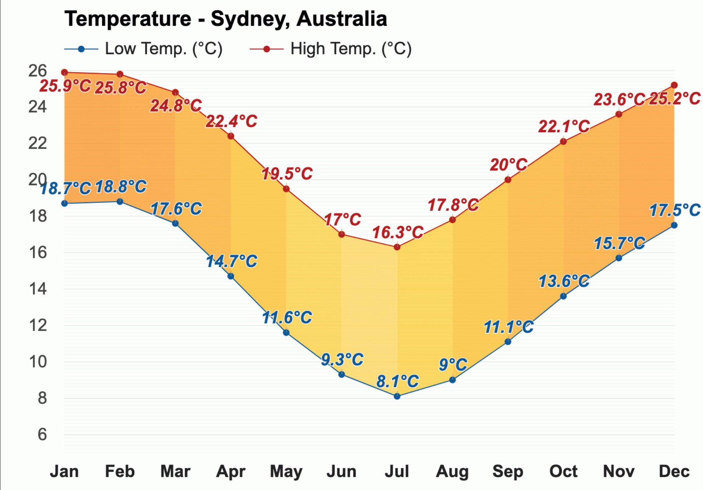

Temperature 
The warmest month is January, with an average high-temperature of 25.9°C (78.6°F) and an average low-temperature of 18.7°C (65.7°F).
With an average high-temperature of 16.3°C (61.3°F) and an average low-temperature of 8.1°C (46.6°F), July is the coldest month in Sydney.

The months with the most sunshine are August through October and December, with an average of 7.9h of sunshine, and June has the least sunshine of the year, with an average of 5.9h of sunshine.
Rain
Throughout the year, in Sydney, there are 143.4 rainfall days, and 1212mm (47.72") of precipitation is accumulated.

The least humid month in Sydney is August, with an average relative humidity of 49%.The month with the least rainfall in Sydney, Australia, is September, when the rain falls for 10.5 days and typically collects 68mm (2.68") of precipitation.
The most humid month in Sydney is February, with an average relative humidity of 64%, whereas June is the month with the most rainfall. Rain falls for 12.5 days and accumulates 132mm (5.2") of precipitation.
* The above information is sourced from Weather-At. Take a visit for more information...
Population 5,231,150 (Metro)
Median Age 30
Ancestry
The most common ancestries in Sydney were Chinese 24.6%, Thai 11.3%, English 9.3%, Indonesian 5.1% and Korean 4.9%.
Country of birth
In Sydney, 17.0% of people were born in Australia. The most common countries of birth were Thailand 13.3%, China (excludes SARs and Taiwan) 11.7%, Indonesia 10.7%, Korea, Republic of (South) 5.4% and India 3.5%.
Religion
In 2021, 30.3% of Sydney residents identified themselves as having no religion. Christianity was the largest religious affiliation at 46%, the largest denominations of which were Catholicism at 23.1% and Anglicanism at 9.2%.
The most common non-Christian religious affiliations were Islam (6.3%), Hinduism (4.8%), Buddhism (3.8%), Sikhism (0.7%), and Judaism (0.7%). About 500 people identified with traditional Aboriginal religions.
* The above information is sourced from Australian Bureau of Statitics. Take a visit for more information...
Sydney Opera House
Dine at a world-class restaurant, see a performance or step behind closed doors for a tour of backstage areas, complete with informative history and fun celebrity anecdotes.
Dance: Romeo and Juliet
Dec 2022-21 Dec 2022
Music: Kronos Quartet
14 Mar 23
Beaches in Sydney
There are more than 100 picturesque beaches in Sydney – from calm, sheltered bays and secret coves to busy surf beaches and world-famous tourist destinations. Many have great facilities and are easily accessible from Sydney’s city centre. A range of aquatic activities are also available, including snorkelling, kayaking, canoeing, stand up paddle boarding and surfing.
BONDI BEACH
BRONTE BEACH
GORDONS BAY
THE BLUE MOUNTAINS
The Blue Mountains is best known for its soaring sandstone ridges blanketed in native bushland. Nestled within the wilderness lie charming mountain towns, ancient Aboriginal rock art and the iconic tourist attraction of Scenic World. Expect to be enchanted by the natural beauty when you set out to explore the walking tracks that loop around the verdant valleys and craggy cliffs.
The Three Sisters
The Beyond Skyway
Scale Canyons
* The above information is sourced from Australia.com Take a visit for more information...